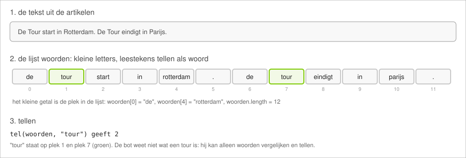
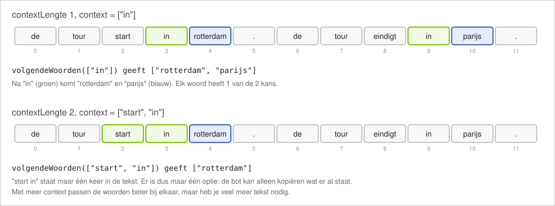
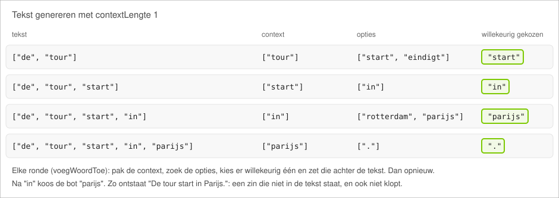

Je eigen taalbot
Je bot leest Wikipedia-artikelen over een onderwerp dat jij kiest, bijvoorbeeld wielrennen, en kijkt welk woord na welk woord komt. In deel 1 laat je hem zinnen afmaken. In deel 2 geef je hem meer context en maak je suggesties, net als het toetsenbord van je telefoon.
Wat is een taalmodel?
Een taalmodel voorspelt het volgende woord in een tekst. Je toetsenbord doet dat als het woorden voorstelt, en ChatGPT doet in de kern hetzelfde: steeds één woord voorspellen en erachter plakken. Jouw bot leert dat door heel veel tekst te lezen en te tellen welk woord na welk woord komt. Die tekst heet de trainingsdata.
Hoe ziet je bot tekst?
Je bot knipt de artikelen in losse woorden, in kleine letters. Leestekens zoals een punt tellen ook als woord. Al die woorden staan op volgorde in één lange lijst. Elk woord heeft een plek in die lijst, net als de pixels in project 2.

Wat komt erna?
De context is het stukje tekst waar je bot naar kijkt: de laatste woorden van de zin. Je bot zoekt in de lijst elke plek waar de context staat, en schrijft op welk woord daarna komt. Die lijst heet opties. Komt een woord vaak na de context, dan staat het vaak in de opties en heeft het meer kans om gekozen te worden. Een model dat zo telt, heet een n-gram-model: het kijkt naar groepjes van n woorden.

Een zin maken
Om een zin af te maken, herhaalt je bot steeds hetzelfde: pak de context, zoek de opties, kies er willekeurig één uit en plak die achter de zin. Hij onthoudt alleen de laatste woorden. Daardoor kan hij zinnen maken die nergens in de tekst staan, en die ook niet waar zijn. Echte taalmodellen doen dat ook. Dat heet hallucineren.

Meer context en meer tekst
Met meer context passen de woorden beter bij elkaar. Maar een groepje van drie of vier woorden komt in je tekst maar heel af en toe voor. Is er na een context maar één optie, dan kan je bot alleen kopiëren wat er al staat. Dat heet overfitting: het model kent de trainingsdata uit zijn hoofd, maar kan niets nieuws. Als vuistregel heb je per extra woord context ongeveer 10 keer zoveel tekst nodig. In de tabel bij je bot zie je of jij genoeg woorden hebt.
Suggesties
Bij autocomplete kiest je bot niet willekeurig. Hij laat de woorden zien die het vaakst na jouw laatste woorden kwamen: de woorden met de grootste kans.
Het verschil met ChatGPT
ChatGPT werkt met hetzelfde idee: het volgende woord voorspellen. Maar het heeft een veel groter deel van het internet gelezen, en het kijkt niet alleen naar de laatste paar woorden. Met attention kan het bij elk woord terugkijken naar alle woorden ervoor, ook als die ver weg staan. Daardoor blijft een lange tekst samenhangend.
De data
Je bot haalt de artikelen op van Wikipedia, de vrije encyclopedie. Zet de titels precies zoals ze op nl.wikipedia.org staan. Een titel die niet bestaat, wordt overgeslagen en staat dan onder "Niet gevonden". Het voorbeeld gaat over wielrennen. Daarna kies je je eigen onderwerp.
sketch.js. Deel 1 (praktijkles 5) is STAP 1 tot en met 4, deel 2 (praktijkles 6) is STAP 5 en 6. Begin met de voorbeeldartikelen over wielrennen. In STAP 5c kies je je eigen onderwerp.